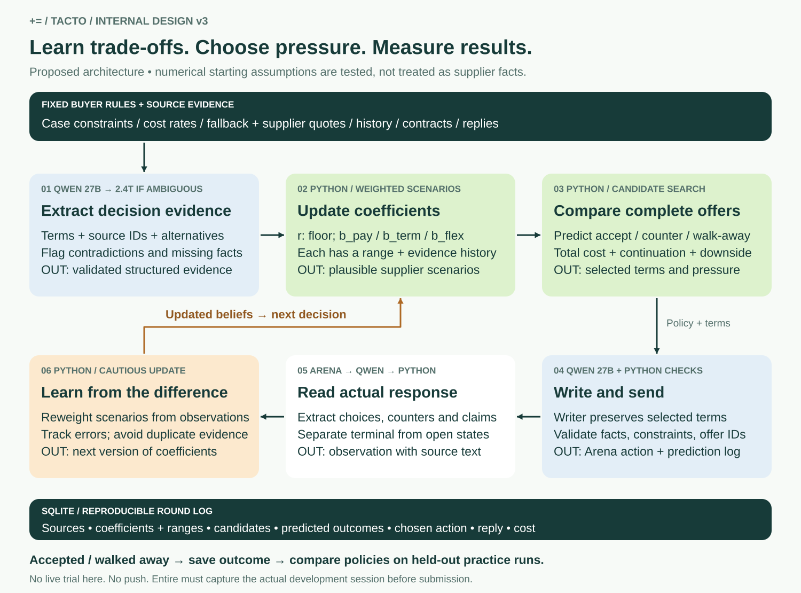
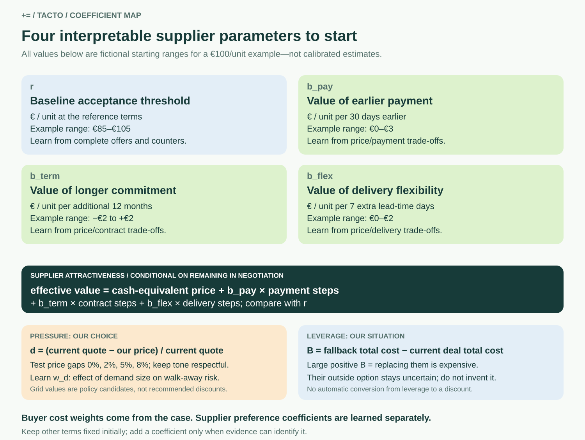

Proposed design, not implemented or calibrated. This document supersedes the v2 model-routing and coefficient design.


Freeze the supplier’s initial complete terms for the session as the reference. Never silently change the baseline after a counteroffer. Normalise price units, quantities, currencies and dates before comparison.
Let x_pay=(reference payment days−offered payment days)/30; x_term=(offered months−reference months)/12; x_flex=(offered lead time−reference lead time)/7. Define V=p_cash+b_pay*x_pay+b_term*x_term+b_flex*x_flex. The threshold r is an effective reservation value at reference terms, not production cost or a proven minimum price. p_cash is the per-unit cash-equivalent value after independently specified adjustments for freight, quality obligations and tooling. Exclude payment adjustments from p_cash when b_pay already models them. Hold unmodelled terms fixed until their effects are specified.
Start with r plus only those preference coefficients relevant to a case. The chart’s €100 example ranges are illustrative priors. Contract preference can be negative; suppliers may dislike locking in long commitments. The simple linear approximation applies only over permitted, modest term changes; test interactions before broadening it.
For each supplier scenario: P(accept | no walk)=sigmoid((V−r)/tau). tau is a pooled uncertainty scale in €/unit; initially fix and sensitivity-test it rather than fitting it alongside everything else. Model P(walk)=sigmoid(w0+w_d*d+w_repeat*n), where d is the price gap relative to the latest supplier quote and n is the number of consecutive rounds we hold the same demand. P(accept)=(1−P(walk))*P(accept | no walk); P(counter)=(1−P(walk))*(1−P(accept | no walk)). These are uncalibrated modelling assumptions until tested. Keep w0,w_d,w_repeat pooled and strongly regularised: a few supplier replies cannot identify them. Question-only actions need a separate conservative response model.
Pressure is a vector: price gap, concession pace and communication firmness. Start by varying the price gap while fixing respectful tone, then test concession pace separately. Leverage is represented by buyer fallback cost difference B and uncertain supplier outside-option evidence. It is not an extra arbitrary multiplier. Dependence already reflected in fallback cost must not be charged again.
Represent joint supplier scenarios as particles with weights. After an observation, new weight is proportional to old weight times P(observation | scenario), then normalise. Retain plausible alternatives; use a nonzero likelihood floor and cautious likelihood tempering for potentially strategic statements. Pairwise choices can use sigmoid((V_A−V_B)/tau_choice), but selection alone is not acceptance. A counteroffer is not a literal disclosure of r. Count an event only once; repeated statements are not independent samples.
For the MVP, weakly update from acceptance/counter/walk categories and explicit comparisons. Track numerical counteroffers separately until their likelihood model is justified. Prefer matched offer comparisons; joint changes and round order confound attribution. Qwen extracts evidence and hypotheses, while Python owns probability updates.
First reject offers outside allowed terms or mandatory constraints. For each remaining candidate and supplier scenario, calculate expected final buyer cost: P(accept)*C_deal + P(counter)*C_continuation + P(walk)*C_fallback. Continuation is a simple remaining-round policy estimate initially, not merely the current offer’s price. C_deal uses the published buyer calculator, including an explicit supplier sustainability estimate where applicable. Keep full production cost separate from r.
Compare expected cost plus lambda times cost standard deviation as an initial uncertainty preference, with lambda chosen as policy (not inferred from supplier preferences). Start with lambda=0 baseline and compare 0.25 and 0.5 offline and in controlled trials. This proxy captures symmetric uncertainty; report high-loss scenarios separately. Avoid duplicating risk already in the official calculator. Score optimisation must also reproduce the official treatment of no-deal outcomes; report official score alongside economic cost rather than assuming they are equivalent.
| Parameter | Initial treatment | What improves it |
|---|---|---|
| r, b_pay, b_term, b_flex | Evidence-based ranges, supplier-specific posterior | Offer choices and repeated observations |
| tau and response coefficients | Fixed/pooled, strong regularisation | Held-out probability calibration and outcome prediction |
| Price-gap grid: 0%, 2%, 5%, 8% | Test candidates only; feasibility checks apply | Controlled practice score, deal rate, walk-away rate |
| lambda: 0, 0.25, 0.5 | Explicit policy alternatives | Compare average score and bad outcomes across matched cases |
Freeze policy versions during each experiment. Log score, whole-deal cost, constraint failures, prediction error/Brier score, latency, model cost and escalation frequency. Reserve held-out cases/runs before tuning; do not select and evaluate the winner on identical observations.
SQLite tables: cases, evidence, sessions, offers, coefficient_versions, scenarios, decisions, events and evaluation_runs. Every coefficient version stores units, reference_offer_id, prior source, posterior range, scenario weights, evidence IDs and timestamp. Every decision stores all candidates, their cost breakdowns and outcome probabilities, chosen action and policy_version. Preserve raw source text and validated extracted fields.
Qwen3.8-27B is the default extractor/interpreter/writer. Escalate to Qwen3.8-2.4T-A95B for decision-relevant contradictions, competing interpretations or decision reversals under plausible assumptions. Missing facts trigger retrieval or a supplier question. One escalation per decision initially; unresolved uncertainty remains in the scenarios.
These are local design artifacts. No Arena session or model call is made, and no files are pushed. Before code submission, Entire must capture the actual development session and outgoing code/checkpoint content must be checked for credentials.